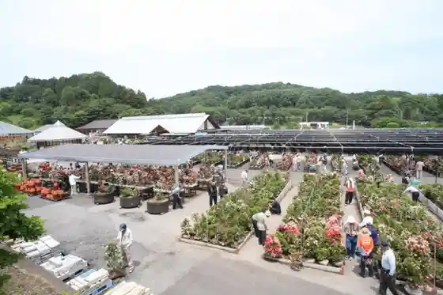
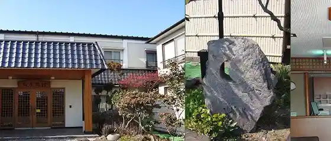
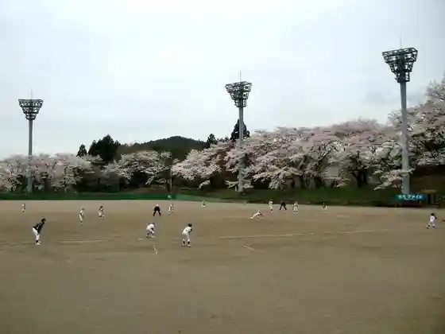
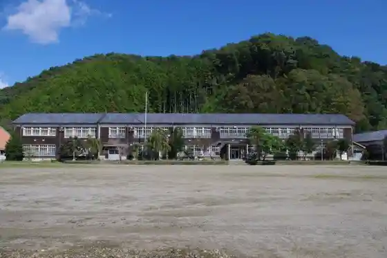

Kuroda Yoho Sono /Pancake Caffe HoneyB
Kanuma, Tochigi · 0120-82-1138 · Official / source link
Kanuma Kaboku Center
Kanuma, Tochigi · 0289-76-2310 · Official / source link

Matsuya Ryokan
Kanuma, Tochigi · 0289-85-3310 · Official / source link

Goten Yama Park
Kanuma, Tochigi · 0289-72-1300 · Official / source link

Kyu Awano Chugakko Kosha
Kanuma, Tochigi · 0289-63-2188 · Official / source link

Ue Nagano Robai Village
Kanuma, Tochigi · 090-1124-2281 · Official / source link
Deai no Mori General Park Oto Campground
Kanuma, Tochigi · 0289-60-3321 · Official / source link
Kanuma Satoyama Wain Chokueiten
Kanuma, Tochigi · 0289-77-8180 · Official / source link
Kanuma Hizatsuki Furutsu Plaza
Kanuma, Tochigi · 0289-65-2625 · Official / source link
Awano Town Kanko Yana
Kanuma, Tochigi · 0289-85-3092 · Official / source link
Yokone Highlands Ido Marsh
Kanuma, Tochigi · 0288-93-4141 · Official / source link
Deai no Mori Ichigo Sono
Kanuma, Tochigi · 0289-60-0175 · Official / source link
Awa no Shiroyama Park
Kanuma, Tochigi · 0289-63-2188 · Official / source link
Su no Piiku Kanuma Kyanpufiirudo & Supa
Kanuma, Tochigi · 0289-74-5964 · Official / source link
Lake Wood Resort
Kanuma, Tochigi · 0289-66-7333 · Official / source link
Dai Ashi Gorge
Kanuma, Tochigi · 0289-63-2188 · Official / source link
Dai Ashi Kawa
Kanuma, Tochigi · 0289-63-2188 · Official / source link
Naka Town Yatai Park
Kanuma, Tochigi · 0289-63-2188 · Official / source link
Higashiko Noyama Io Tera
Kanuma, Tochigi · 0289-75-2399 · Official / source link
Tochigi Shamo Kako Kumiai
Kanuma, Tochigi · 0289-65-6772 · Official / source link
Nichi Akira Soba
Kanuma, Tochigi · 0289-65-2525 · Official / source link
Nihonryori Mishima
Kanuma, Tochigi · 0289-62-3665 · Official / source link
Hana Nojo Awa no
Kanuma, Tochigi · 0289-83-7787 · Official / source link
Kasu Ogawa
Kanuma, Tochigi · 0289-83-0543 · Official / source link
Kanuma Tachikawa Uwazumi Nama Art Museum
Kanuma, Tochigi · 0289-62-8272 · Official / source link
Deai no Morifuku Shi Center (Kanuma Koreisha Fukushi Center)
Kanuma, Tochigi · Official / source link
Joraku Tera (Rokuji Mikoto)
Kanuma, Tochigi · 0289-83-0971 · Official / source link
Zenjitsu Hikari Hai Land Rojji
Kanuma, Tochigi · 0288-93-4141 · Official / source link
Yume no Ki (Okamoto Taro Saku no Monyumento)
Kanuma, Tochigi · 0289-63-2188 · Official / source link
Ki no Furusato Dentokogei Kan
Kanuma, Tochigi · 0289-64-6131 · Official / source link
Yashu Mashi Workshop (Kami Suki Experience)
Kanuma, Tochigi · 0289-84-8511 · Official / source link
Yuhi Gaku no Akayashio Shiroyashio
Kanuma, Tochigi · 0289-60-2507 · Official / source link
Wagashi Tokoro Matsuzuki
Kanuma, Tochigi · 0289-64-2558 · Official / source link
Ko Minegahara Highlands
Kanuma, Tochigi · 0289-63-2188 · Official / source link
Machi no Eki Shin Kanuma Yado
Kanuma, Tochigi · 0289-60-2507 · Official / source link
Isoyama Shrine (Ajisai)
Kanuma, Tochigi · Official / source link
Zenjitsu Hikatsu Tsuji no Yu Koryu Kan
Kanuma, Tochigi · 0289-86-1126 · Official / source link
Nagano Kawa
Kanuma, Tochigi · 0289-63-2188 · Official / source link
Kanuma Kanko Shimozawa Yana
Kanuma, Tochigi · 0289-62-8041 · Official / source link
Ka So Yama Shrine
Kanuma, Tochigi · 0289-63-2188 · Official / source link
Ga So Yama Shrine
Kanuma, Tochigi · 0289-86-7717 · Official / source link
Kongo Yama Zuiho Tera
Kanuma, Tochigi · 0289-74-2401 · Official / source link
Ko Mine Sono
Kanuma, Tochigi · 0289-63-2188 · Official / source link
Godan Falls
Kanuma, Tochigi · 0289-60-2507 · Official / source link
Ontake Yama Shrine
Kanuma, Tochigi · 0289-84-0320 · Official / source link
Kosai Tera (Enku Saku Senjukannon Bosatsu Ritsuzo)
Kanuma, Tochigi · 0289-63-2188 · Official / source link
Arai Kawa
Kanuma, Tochigi · 0289-63-2188 · Official / source link
Kurokawa (Namekawa)
Kanuma, Tochigi · 0289-63-2188 · Official / source link
Imamiya Shrine
Kanuma, Tochigi · 0289-62-1172 · Official / source link
Iseya Ryokan
Kanuma, Tochigi · 0289-62-2250 · Official / source link
Nature Taiken Koryu Center
Kanuma, Tochigi · 0289-64-8890 · Official / source link
Kanuma Sports Park
Kanuma, Tochigi · 0289-77-2898 · Official / source link
Kanuma Nishikigoi Park
Kanuma, Tochigi · 0289-65-5141 · Official / source link
Kanuma Ritsu Awano Folk History Museum
Kanuma, Tochigi · 0289-85-2259 · Official / source link
Kanuma Kumiko Zukuri Experience
Kanuma, Tochigi · 0289-64-6131 · Official / source link
Miyama Tomoe no Yado
Kanuma, Tochigi · 0289-60-2507 · Official / source link
Soba Tei Sezaemon
Kanuma, Tochigi · 0289-71-1205 · Official / source link
Beriizufan
Kanuma, Tochigi · 050-3702-6421 · Official / source link
Ko Mine Shrine
Kanuma, Tochigi · 0289-74-2111 · Official / source link
Seiryu no Sato Kasuo
Kanuma, Tochigi · 0289-83-0012 · Official / source link
Kiyoshi Hayashiji (Botan)
Kanuma, Tochigi · 0289-62-3593 · Official / source link
Nikko Kohii Kyo Cha Iori Main Shop
Kanuma, Tochigi · 0289-60-1610 · Official / source link
Ikuko Shrine
Kanuma, Tochigi · 0289-60-2507 · Official / source link
Osaka Ya (Yume So) Mise
Kanuma, Tochigi · 0289-62-2076 · Official / source link
Okonnyaku Chaya
Kanuma, Tochigi · 0289-60-6070 · Official / source link
Yatai no Machi Chuo Park
Kanuma, Tochigi · 0289-60-6070 · Official / source link
Kanuma Bunka Katsudo Koryu Kan
Kanuma, Tochigi · 0289-60-7890 · Official / source link
Sumibi Yakiniku Otsuka Kanuma Mise
Kanuma, Tochigi · 0289-60-7530 · Official / source link
Chujo Shoten Main Shop Tomioka Mise
Kanuma, Tochigi · 0289-62-2366 · Official / source link
Yakisoba ☆ Basoki Ie Kanuma Mise
Kanuma, Tochigi · 0289-62-9009 · Official / source link
Watanabe Ringo Sono
Kanuma, Tochigi · 090-4178-6962 · Official / source link
Ishi Retsu Yama
Kanuma, Tochigi · 0289-60-2507 · Official / source link
Senju In
Kanuma, Tochigi · 0289-65-0778 · Official / source link
Senju Yama Park
Kanuma, Tochigi · 0289-65-0778 · Official / source link
Chiba Shozo Memorial Museum
Kanuma, Tochigi · 0289-75-1614 · Official / source link
Sotai Doso Kami Manju
Kanuma, Tochigi · 0289-85-2300 · Official / source link
Soba Tokoro Yashio Iori (Zenjitsu Hikatsu Tsuji no Yu Koryu Kannai)
Kanuma, Tochigi · 0289-86-7666 · Official / source link
Dai Ashi Kawa F&C Fiirudobirejji
Kanuma, Tochigi · 0289-63-5678 · Official / source link
Autodoavirejji Hakko Michi no Mori Fisshingueria
Kanuma, Tochigi · 0289-82-3330 · Official / source link